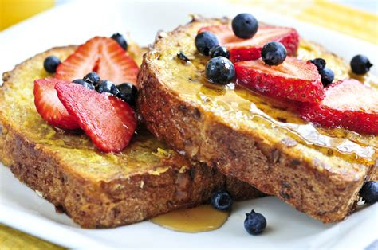

French Toast

A classic breakfast or brunch
While french toast is a staple of breakfasts at diners and family restaurants it is also easy to make at home. Above all french toast is versatile, it can serve as a treat for your sweet tooth, or as a quick way to turn stale bread into a solid breakfast.
Ingredients
- 6 slices of bread (the stale ends of loves work great!)
- 2 eggs
- 2/3 cups milk
- 1/4 teaspoon ground cinnamon
- 1/4 teaspoon ground nutmeg
- 1 and 1/4 teaspoon vanilla extract
Steps
- Beat together egg, milk, vanilla, and spices
- Heat a lightly buttered (no you can not use oil over medium heat)
- Dunk each slice of bread in egg mixture, soaking both sides. Place in pan, and cook on both sides until golden. Serve hot.